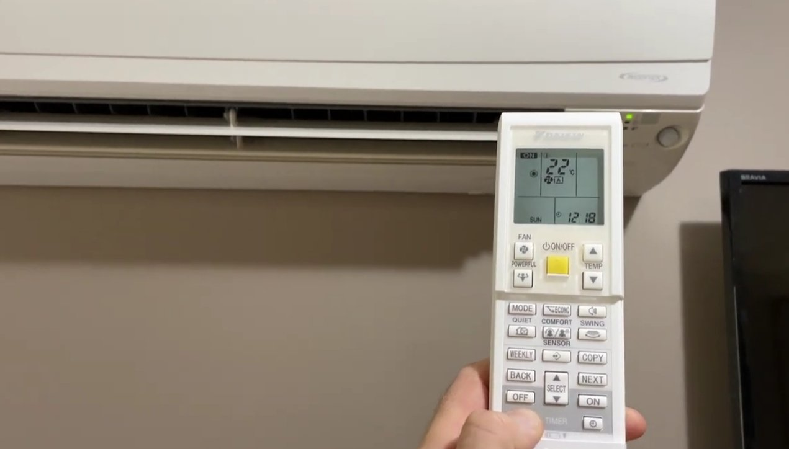
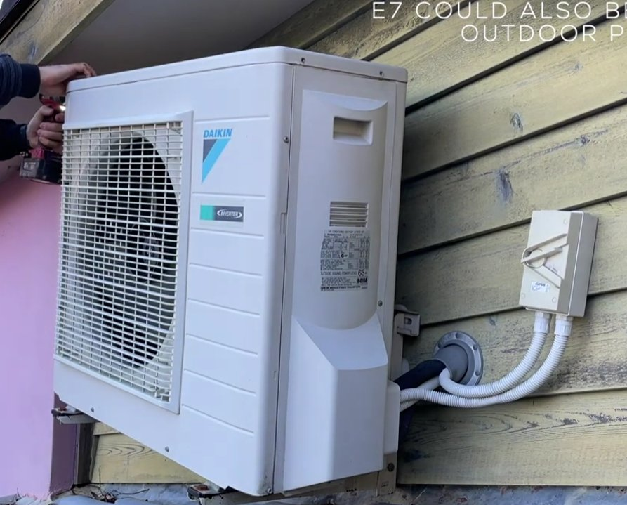
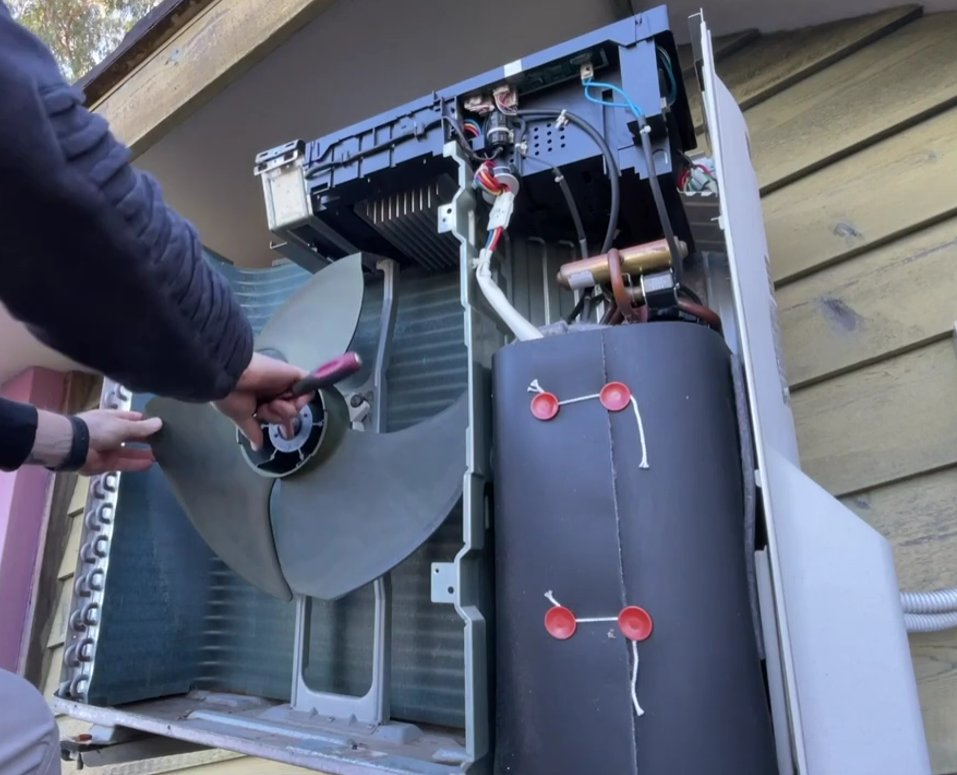
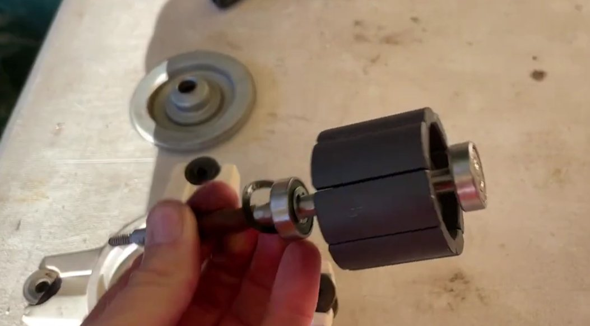

Daikin E7: What You're Dealing With Before Anything Else
April in Hyderabad, 42 degrees outside, and my Daikin split AC decided that was the right time to flash E7 and shut down. The indoor unit beeped three times, the green light started blinking, and that was that. No cooling, no fan, just a blinking light mocking me in the heat.
I want to be upfront about something before we get into this: E7 on a Daikin AC is a fan motor fault, and unlike some error codes that are soft issues you can fix by cleaning a filter or resetting the unit, this one often — not always, but often — involves actual hardware. I'll walk through everything you can try yourself first, because some E7 errors do resolve without a technician. But I'm not going to pretend this is always a ten-minute home fix, because sometimes it isn't.

What E7 Actually Means
E7 on Daikin indicates a problem with the fan motor — specifically, the motor that drives the blower (on some models the indoor blower wheel, on others the outdoor propeller fan). This is the component responsible for moving air across the heat exchanger. The E7 error triggers when the control board detects that this motor isn't running at the speed it should be, or isn't running at all.
The board sends a signal for the fan to spin, checks the feedback from the motor's Hall sensor to confirm it's actually spinning, and when that feedback doesn't match expectations — E7.
What causes that mismatch is where it gets more complicated, because there are several different things that can produce the same error code. That's the reason E7 requires diagnosis rather than a single fixed solution.
Why E7 Comes Up — All the Causes
Fan Motor Has Failed
This is the most common root cause on units more than 4–5 years old. The motor's bearings wear out, the windings degrade, or in humid climates the motor develops internal corrosion that eventually causes it to seize or underperform. When this happens the motor either doesn't spin at all or spins too slowly to register correctly.
Fan Capacitor Has Failed
The blower motor has a run capacitor that helps it start and maintain speed. Capacitors are relatively inexpensive components that degrade over time — heat accelerates this significantly, which is why AC capacitor failures spike in Indian summers. A failed capacitor means the motor gets no starting kick and either doesn't spin or spins weakly. Importantly, a bad capacitor is often mistaken for a failed motor, and replacing the capacitor is much cheaper than replacing the motor. This distinction matters enormously for your repair bill.
Blower Wheel Is Jammed or Obstructed
Over years of use, the blower wheel accumulates dust, sometimes to the point where it becomes so heavy or unbalanced that the motor can't turn it. In extreme cases, a piece of debris gets lodged in the wheel and locks it physically. A motor trying to spin a jammed wheel draws excess current, overheats, and triggers E7.

Hall Effect Sensor Has Failed
This is the sensor on the motor that tells the control board how fast the motor is spinning. If the sensor fails, the board gets no feedback — even if the motor is running fine — and throws E7 because it can't confirm operation. This is less common than the causes above, but worth knowing because it means the motor itself might actually be okay.
Loose or Corroded Wiring Connection
The wiring harness between the control board and the fan motor can develop loose connections, especially in units that have vibrated for years or been serviced multiple times with the covers on and off. A loose connector can interrupt the signal or the power supply and produce E7 intermittently or permanently.
Control Board Has Failed
If everything else — motor, capacitor, sensor, wiring — checks out fine, the control board that drives the motor may itself be faulty. Control board replacements are expensive and this is always the last thing diagnosed after every other component has been ruled out.
What You Can Try Yourself
The internal components of a split AC — the motor, capacitor, wiring harness — require opening the unit beyond what most people should attempt at home, especially without electrical safety knowledge. Capacitors store charge even after the unit is switched off and can give a serious shock if handled incorrectly. But there are a few things worth trying before calling a technician, because they cost nothing and occasionally resolve E7 entirely.
Not standby — fully off. Turn the AC off from the remote, then switch off the circuit breaker for the AC (or pull the plug if it's a window unit). Leave it completely dead for 15 minutes. Then restore power and try again.
Some E7 errors are triggered by a momentary fault — a power fluctuation, a brief stall during startup on a very hot day — rather than an actual component failure. The control board latches the error and won't clear it until power is properly cycled. A full power cut (not just remote off) sometimes clears a transient fault completely.
If E7 comes back within a few minutes of restarting, it's not a transient fault. Move on.
This sounds unrelated to a fan motor error, but hear it out. A severely blocked air filter restricts airflow to the point where the blower motor has to work significantly harder to pull air through. On a hot day with a dirty filter, the motor can overheat and trigger a thermal protection fault — which on some Daikin models presents as E7 rather than a specific thermal error.
- Open the front panel of the indoor unit and remove the filters.
- Hold them up to the light. If you can't see light through them clearly, they're overdue for a clean.
- Wash under running water, let them dry completely, and reinstall.
- Try the unit again.
This won't fix an actual motor failure, but if the filter is genuinely packed and the unit is otherwise relatively new, it's worth eliminating as a cause.
With the unit switched off and unplugged, open the front panel and look at the blower wheel. You can usually see it through the filter housing area. Shine a torch in.
- Is it caked in thick dust and grime?
- Is there anything visibly lodged in it — packaging foam, an insect nest, accumulated debris that's gone solid?
If the wheel is heavily loaded with dust, that added weight and imbalance can genuinely stress the motor enough to trigger E7. Professional AC deep-cleaning — where the blower is properly cleaned — can sometimes resolve an E7 that's been caused purely by a dirty, heavy blower wheel. This costs around ₹800–1,500 and is worth doing regardless.
What the Technician Will Do
If the steps above don't resolve E7, a Daikin-trained technician will typically work through the following in order of cheapest to most expensive:
It's the cheapest and easiest component to test and replace. A capacitor tester shows immediately if it's holding charge correctly. If it isn't, replacing it — ₹200–600 depending on rating — is the first fix attempted. A fair number of E7 errors are resolved right here.
The technician measures resistance across the motor windings with a multimeter and checks for continuity. A shorted or open winding confirms motor failure. They'll also spin the motor shaft manually to check for bearing roughness or physical seizure.

On a running motor (or with a test rig), the sensor output can be verified. A dead sensor produces no signal; a working one pulses as the motor spins. If the sensor has failed but the motor itself is fine, replacing the sensor alone resolves E7 at a much lower cost than a full motor replacement.
All connections between the control board and the motor get checked and reseated. Corrosion at connector pins is cleaned. Sometimes a single loose connector plug is the entire cause of E7 — a five-minute fix that costs nothing once the technician is on-site.

Repair Costs in India
On a Daikin split AC in India, here's roughly what to expect — from best case to worst:
| Repair | Estimated Cost | Notes |
|---|---|---|
| Capacitor replacement | ₹400–900 | Includes labour. Fast, usually same visit. |
| Hall sensor replacement | ₹500–1,200 | Small part, careful work required. |
| Deep-clean service (blower) | ₹800–1,500 | Worth doing regardless of fault cause. |
| Fan motor replacement (genuine Daikin) | ₹3,000–6,000 | Motor ₹2,500–5,000 + labour ₹500–800. |
| Control board replacement | ₹4,000–10,000+ | Model-dependent. Last resort after all else fails. |
For the motor specifically: genuine Daikin replacement motors are not cheap, but for a unit running continuously for months at a stretch, the quality difference matters. Third-party compatible motors exist for less — ask the technician to confirm availability for your specific model before deciding.
The Warranty Angle
Daikin India offers a 1-year comprehensive warranty and up to 5 years on the compressor on most models, but the fan motor falls under the 1-year comprehensive coverage.
If your unit is under a year old and showing E7, call Daikin India directly: 1800-102-9300 (toll-free) and log a complaint. Do not let a local independent technician open the unit before a warranty claim — that typically voids coverage.
For units between 1 and 5 years old, Daikin's AMC (Annual Maintenance Contract) can significantly offset repair costs. If you don't have one and the unit is out of comprehensive warranty, it's worth asking about an AMC when the technician visits — they often offer them at the time of a paid service call.
Don't Ignore E7 and Keep Restarting the AC
A few people try switching the unit off and back on repeatedly, getting a few minutes of cooling before E7 returns, and just living with that for a while. This is a bad idea for one specific reason:
If it's a bearing issue, running the motor in a fault state dry-accelerates damage to the motor shaft and can turn a ₹4,000 motor replacement into a ₹4,000 motor replacement plus additional damage to the surrounding assembly — including, in some cases, damage to the PCB from an overcurrent spike when the motor seizes. Get it diagnosed promptly.
Daikin's service network in India is reasonably wide. A proper diagnosis visit typically costs ₹400–600, which is adjusted against the repair cost if you proceed — so there's no financial reason to delay.
Quick Summary
| What to Try / Check | Difficulty | Time |
|---|---|---|
| Full power cycle (breaker off, 15 min) | Very Easy | 15 min |
| Clean air filter | Very Easy | 20 min |
| Inspect blower wheel for obstruction (torch only) | Easy | 5 min |
| Technician: test capacitor | Tech only | ~30 min visit |
| Technician: test motor, sensor, wiring | Tech only | Same visit |
| Component replacement (as diagnosed) | Tech only | 1–2 hr |
Start with the power cycle. It's free and occasionally it's all that's needed for a transient fault. If E7 returns on the next run, the three home checks (filter, blower visual) take less than 30 minutes combined. After that, the repair is in the hands of a technician — and the capacitor being the culprit is a genuinely common and cheap outcome worth hoping for.
Got your AC back to cooling? The capacitor surprise is real — many E7 calls end there. And the annual service that catches a degrading capacitor before it fails completely costs less than the call-out fee to fix E7 after it does.